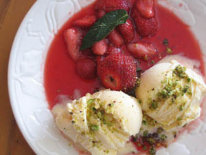

Aardbeien met vanille-ijs en pistachenoten
Ingrediënten (voor 4 personen)
- 1/2 l vanille-ijs
- 1/2 kg aardbeien
- 3 el vloeibare honing
- 50 g pistachenoten
Bereiding
- Giet de honing in een koekenpan en laat ze karameliseren.
- Voeg de aardbeien erbij en laat deze zacht worden.
- Plet de pistachenoten in een vijzel.
- Leg op een bord 2 bollen vanilleijs, voeg er de warme aardbeien bij en strooi er de pistachenoten over.
- Versier met een aardbei en een bladje munt.